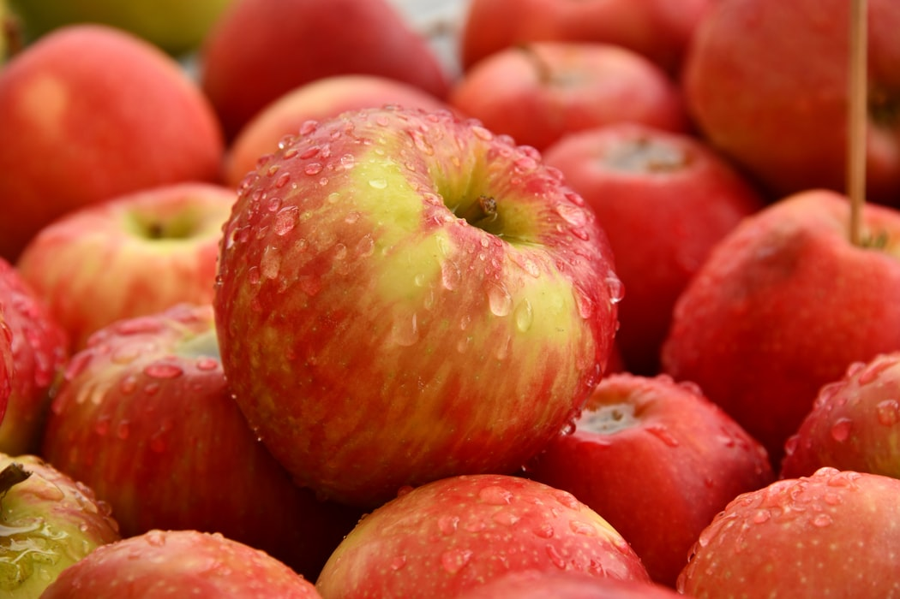

 LoFood delicious apples make healthy, tasty snacks any time. Now the delicious apples that everyone has grown up loving are available in organic. These apples are grown without the use of harmful pesticides, fertilisers, or preservatives. Our farmers use traditional earth-friendly farming methods inspected by a nationally recognised agency to verify organic authenticity. LoFood apples are preferred for their superiority in taste, and benefits to health, as well as the environment. There are plenty of ways to enjoy these treasures, whether whole, dipped in caramel, or in place of regular apples in your favorite apple recipes. Refrigerate unwashed apples in a perforated plastic bag for up to four months. Organic fruits should not be stacked with non-organic fruits. At Gally’s Farms, we defend a link with the nature. Our point of view is simple: the nature does well, we need to do the rest. We cultivate our products and invent our services which permitted to the city and its inhabitants to preserve a precious link with the benefits of a natural environment. We have a stock farming, a dairy, and a fruit and vegetable pick-your-own.
Order Now!
| Name | Description | Price | Quantity (Kg) |
|---|---|---|---|
| Gala Apples | From Gally's Farms. | 3€/kg | |
| Golden Apples | From Gally's Farms. | 3.50€/kg | |
| Granny Apples | From Gall's Farms. | 3€/kg | |